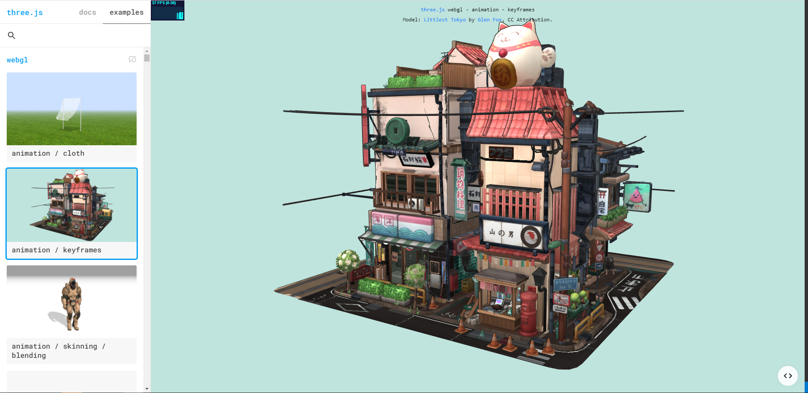

網站互動3D模型 比較表
- Three.js - Sketchfab - Model-Viewer
- 1. Three.js
- 2. Sketchfab
- 3. Model-Viewer
Three.js
Three.js 是一套基於 WebGL 開發出的 Javascript 函式庫，
它提供了比 WebGL 更簡單的 Javascript API，讓開發者能夠輕易在瀏覽器做 3D 繪圖。
Three.js比較偏向3D類型的canvas套件
官網Demo範例

優點:
可以製作複雜模型特效，支援度跨平台良好
缺點:
技術門檻較高，文件類型種類最多，開發時程較長
| Title | Artist | Period |
|---|---|---|
| 清 | 居廉 | 花卉 |
| 民國 | 高劍父 | 畫虎 |
| 民國 | 楊善深 | 四川寫生冊 峨眉金頂臥雲菴 |